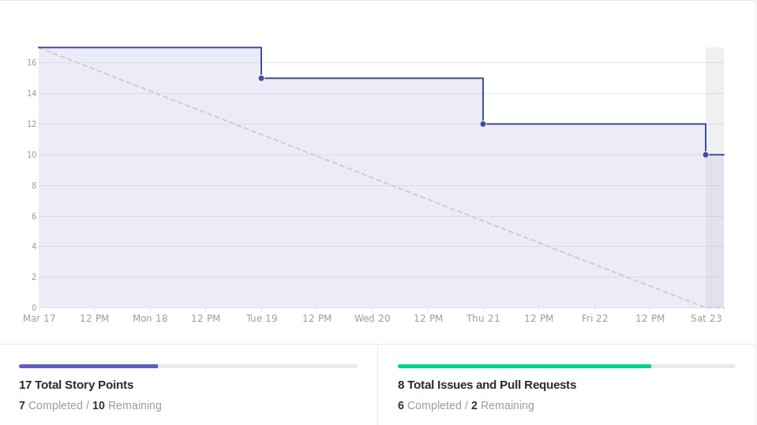

Version control
| Date | Version | Update | Author |
|---|---|---|---|
| 24/03/2019 | 0.1 | Sprint Review | Thiago Ferreira |
Sprint 0
Resumo da Sprint
Esta sprint teve como marco a definição da temática do projeto, criação de documentação de base e treinamentos de nivelamento para a equipe de desenvolvimento. Também foram fechadas issues focadas na adequação do repositório aos padrões de comunidade recomendados do github.
Quantos as pendências, ficaram pendentes duas issues de treinamentos relativas à tópicos mais avançados, estas issues correspondendo à 10 pontos em total e acabando por prejudicar o burndown dessa sprint inicial.
Fechamento da Sprint
| Issue | Status | Pontos |
|---|---|---|
| Come up with a name for the project | Concluída | 0 |
| Attend to SCRUM framework training | Concluída | 2 |
| Decide which topic the bot will help with | Concluída | 1 |
| Attend Git Training | Concluída | 2 |
| Create commit policy document | Concluída | 1 |
| Create branch policy document | Concluída | 1 |
| Learn about chatbot | Não Concluida | 5 |
| Learn about Microservices Arquitecture | Não Concluida | 5 |
| ___ |
Sprint Burndown

Sprint Velocity

Sprint Review
Positivo
* Bons Treinamentos
Negativo
* Comunicação entre o membros
* Engajamento Github
* Noção de Papéis
A Melhorar
* Organização de reunião
* Divulgar pauta reunião anteriormente
* Preparação
* Melhor entedimento dos papéis dos membros
Equipe
Equipe de Gerência:
* Arquiteto: Davi Alves
* DevOps: Gabriel Ziegler
* Product Owner: Carlos Aragon
* Tech Leader: Thiago Ferreira
Equipe de Desenvolvimento:
- Alex Porto
- Bruno Duarte
- Ernando Braga
- Eugenio Sales
- João Victor